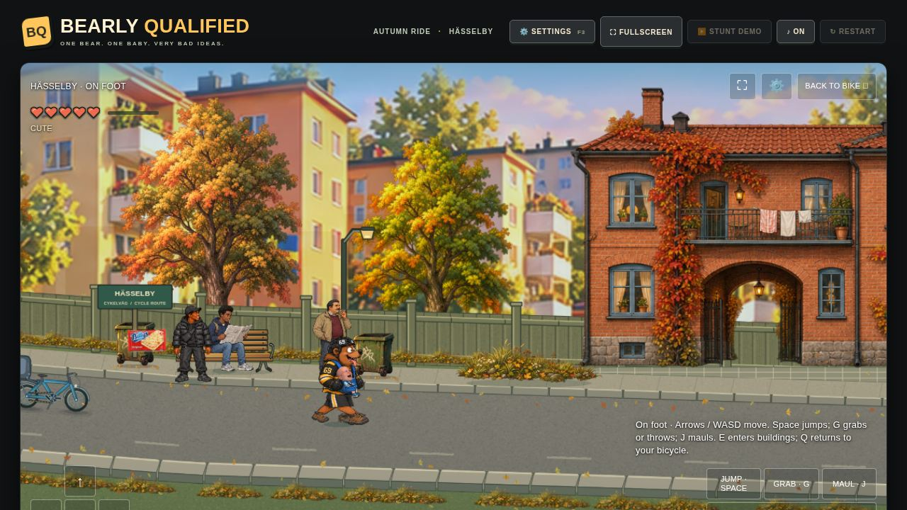
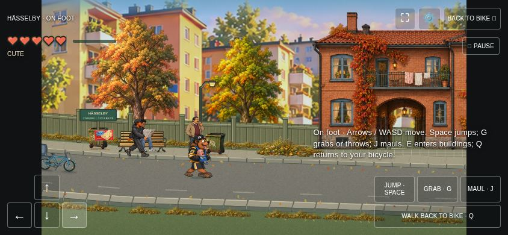
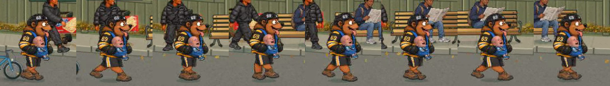
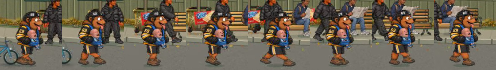

Actual Chromium game footage at the accepted camera, native timestamp spacing and1× playback. The encoding is24fps; this is not a game frame-rate measurement. Desktop1280×720; CDP touch844×390. Physical phones and Safari were not tested. One disclosed own route-stop setup precedes native controls. No artwork or posed renderer board replaces gameplay.
Square clips start after native movement to720/650, clear of help text and the bicycle, then use sequential right, left, up and down. Each direction was requested for2.4s; the recorded observations give actual duration including screenshot capture. Source vertical holds are shorter because its original depth floor spans155world units. Accepted results assemble completed groups across runs; the raw main run remains False after a post-export action API assertion. See the scope manifest. Per-run timing and calibration evidence is in before / after.

Source baseline video payload omitted for compact evidence. Normal native stills, desktop temporal strip and full recording metadata remain.

Source baseline video payload omitted for compact evidence. Normal native stills, desktop temporal strip and full recording metadata remain.
Genuine incoming gang hits and native J/Maul precede these continued left walks. Each starts in the original back carrier. Its original automatic return to front remains enabled. Genuine hit/recovery can interrupt walking; normal P/touch pause is entered only after held motion for export, then resumed for live recovery.
Eight native140×160 crops from each actual video,0.2s apart. No enlargement. These strips support temporal comparison; the full videos above preserve native timing.
before
after
before

after
